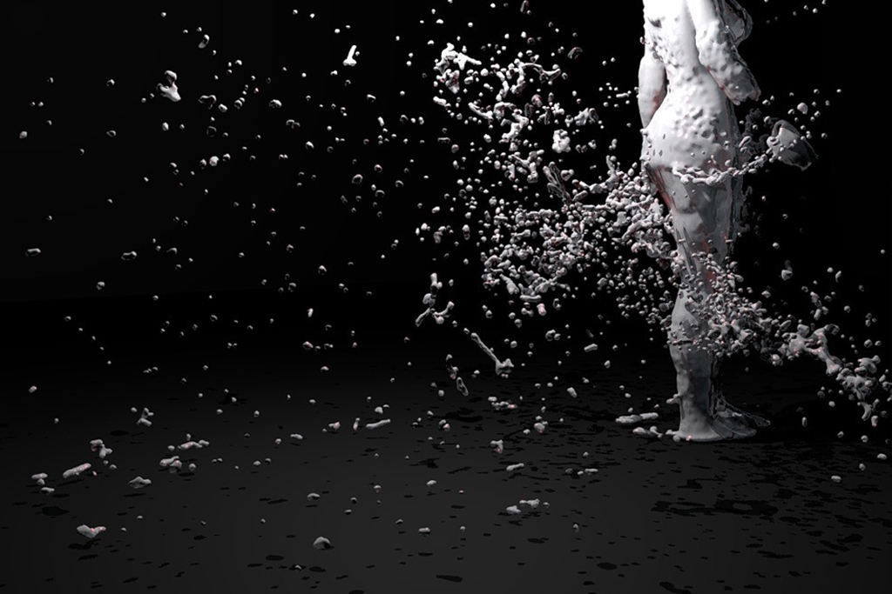
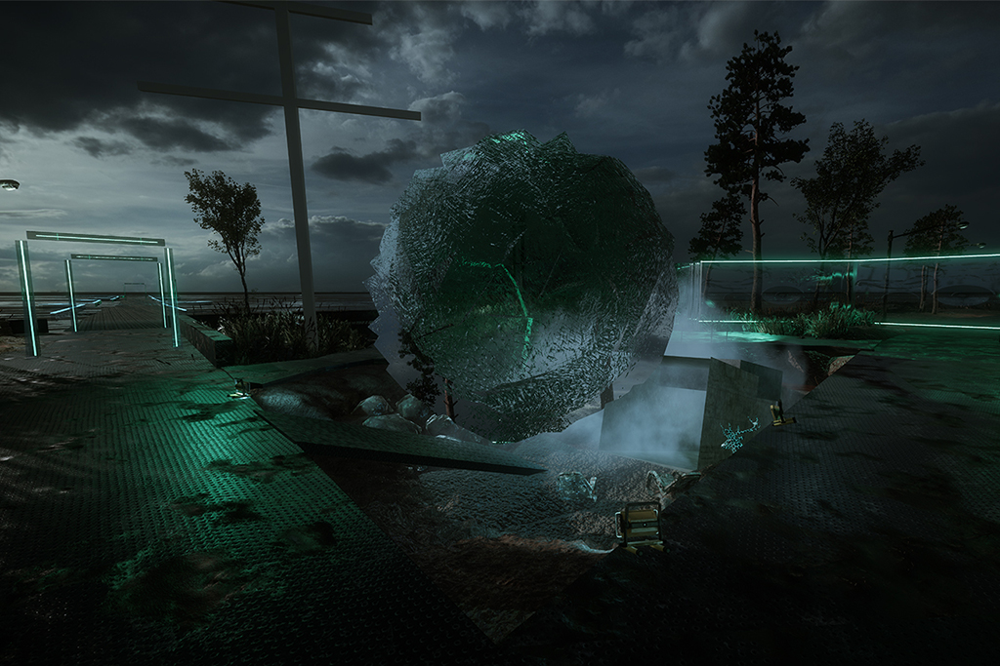
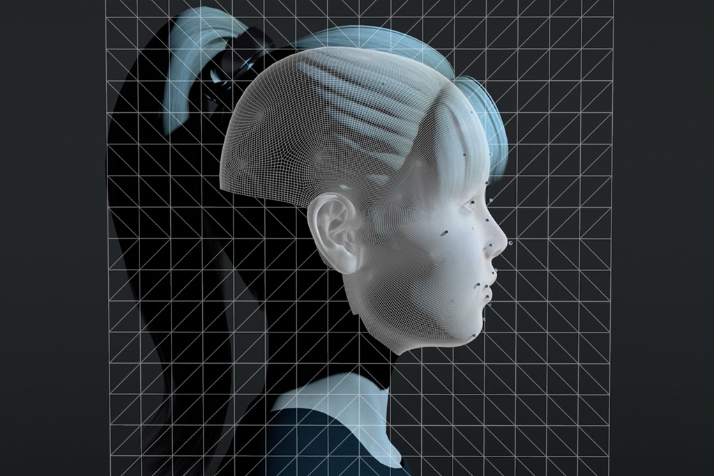
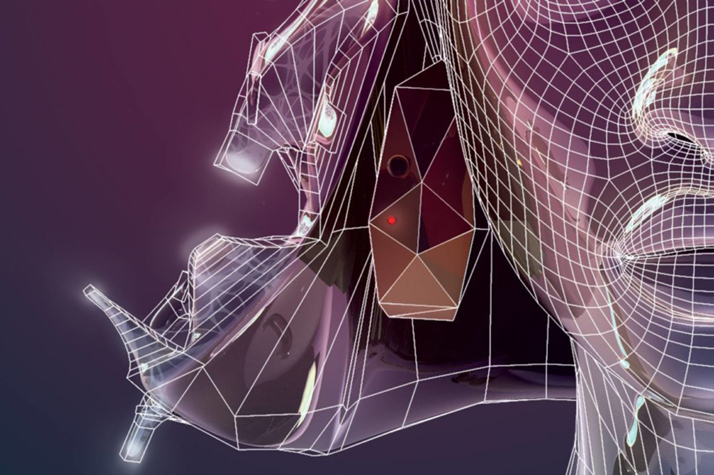
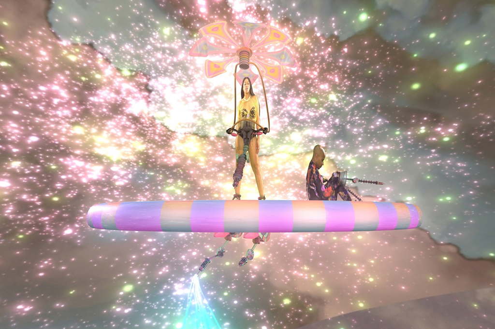
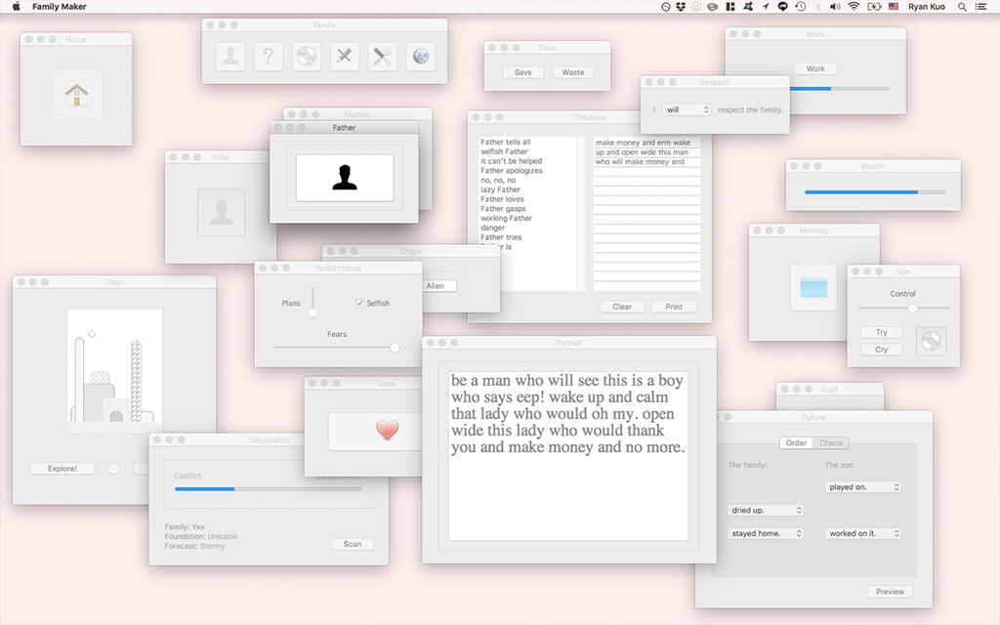
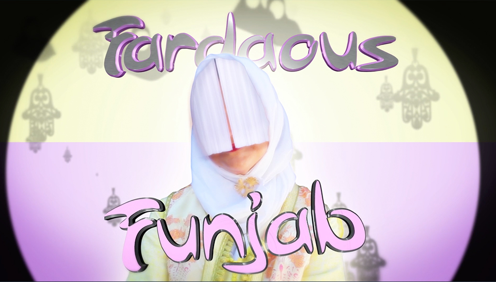
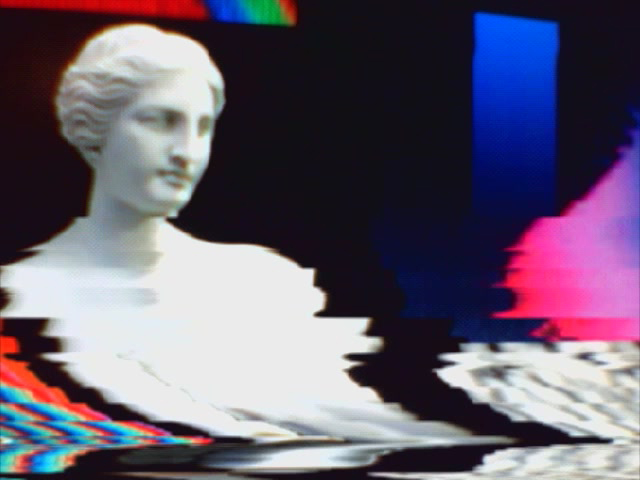
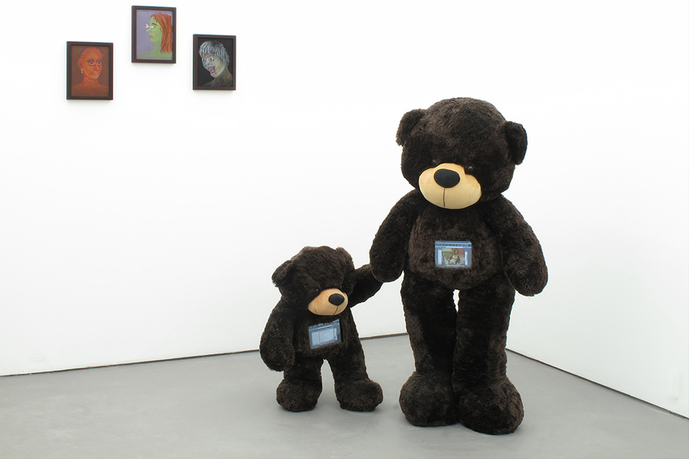

Invited moderator Nora Khan hosts our first salon discussion. For one night only, we’ll screen artworks selected by Khan, presented salon-style for members of The Current in our SoHo loft location.

Snow Yunxue Fu – 'Side' (2017)
Moving image installation with audio, Duration: 06:08. Watch Online

Jakob Kudusk Steensen – 'AQUAPHOBIA' (2017)
Roomscale Virtual Reality Artwork for HTC Vive. Demo Online

LaTurbo Avedon – 'ID' (2015)
Single-channel and 3-channel HD moving image with audio, Duration: 03:19. Watch Online

Hyphen-labs 'NeuroSpeculative AfroFeminism' (2016 – ongoing)
Virtual Reality Artwork for Oculus Rift and Samsung Gear. Trailer Online

Jacolby Satterwhite – 'Domestika' (2017)
360° Video, Duration 15:44. Excerpt Available in New Museum's First Look Artist VR App
“This salon will explore how contemporary artists subvert, disassemble, and undo the standard language we have to talk about identity. In doing so, they offer new and surprising paradigms for framing and exploring very old questions. We take up “identity” as a point of access, identity as mode for collective meaning-making, and identity as the exquisite and universal search to mediate who we would like to be through how we wish to be seen.” Read the full salon statement from Nora Khan

Ryan Kuo – 'Family Maker' (2017 – ongoing)
Software application for MacOS.

Meriem Benanni – 'Fardaous Funjab' (2015-2017)
Single-channel moving image with audio, Duraion: 09:31. Trailer Online

Tabita Rezaire – 'Premium Connect' (2017)
Single-channel moving image with audio, Duration: 13:00. Watch Online

Ann Hirsch – 'Twelve' (2013)
iPad Application, iPads inside Teddy Bears.
{kind=link}
{kind=link}
{kind=link}
{kind=link}
{kind=link}
{kind=link}
{kind=link}
{kind=link}
{kind=link}